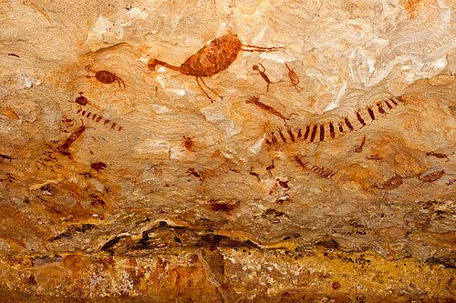

Estima-se que os primeiros seres humanos tenham ocupado a região que compreende o atual território brasileiro há cerca de 60 mil anos.[39] Quando encontrada pelos europeus em 1500, a América do Sul tinha sua costa oriental habitada por cerca de dois milhões de nativos, do norte ao sul.

A população ameríndia era repartida em grandes nações indígenas compostas por vários grupos étnicos entre os quais se destacam os grandes grupos tupi-guarani, macro-jê e aruaque. Os primeiros eram subdivididos em guaranis, tupiniquins, tupinambás, entre inúmeros outros.[42] Os tupis espalhavam-se do atual Rio Grande do Sul ao Rio Grande do Norte de hoje,[42] sendo a primeira raça indígena que teve contato com o colonizador,[43] na região denominada Pindorama (do tupi, "terra das palmeiras"),[44] e decorrente da maior presença, com influência dos mamelucos, mestiços, dos luso-brasileiros que nasciam e nos europeus que se fixavam".[43] As fronteiras entre esses grupos e seus subgrupos, antes da chegada dos europeus, eram demarcadas pelas guerras entre os mesmos, oriundas das diferenças de cultura, língua e costumes.[45] Guerras essas que também envolviam ações bélicas em larga escala, por terra e por água, com a antropofagia ritual sobre os prisioneiros de guerra.[46]